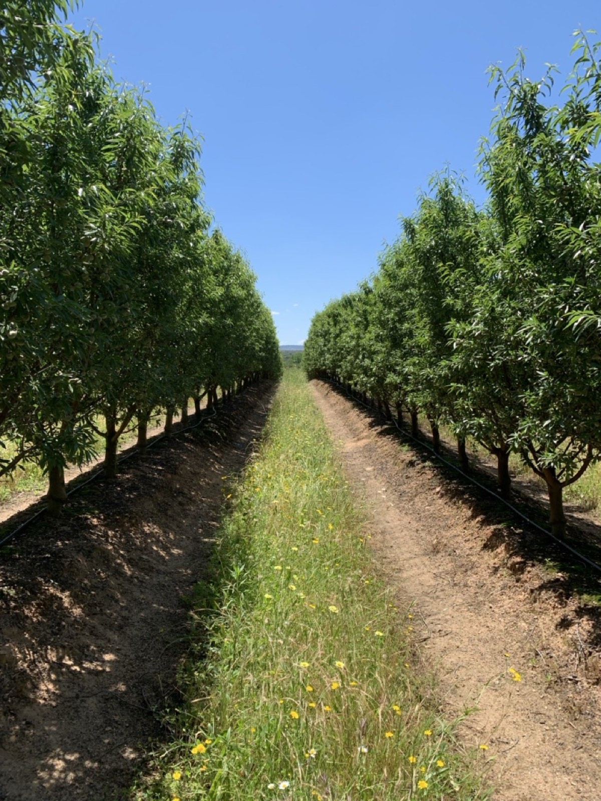
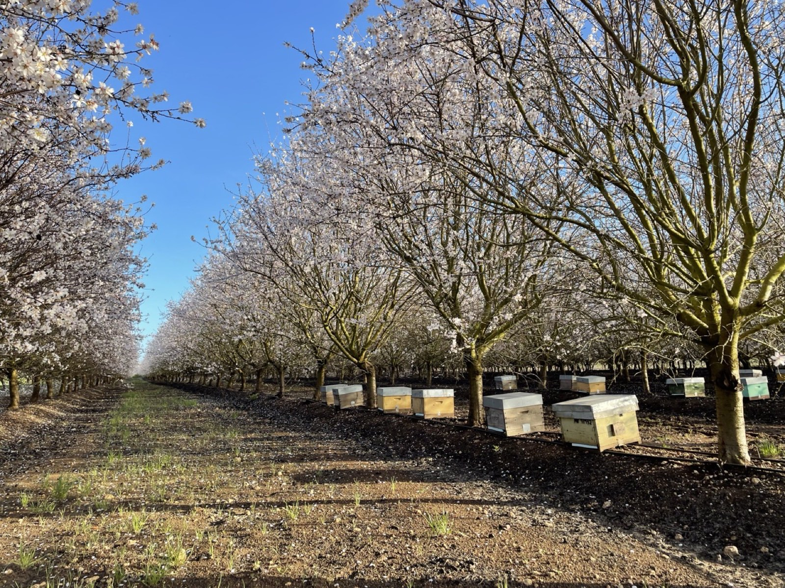

Develop credible alternative origins.
Test supply, specifications and destination economics before asking procurement teams to change route.
Agricultural sourcing and supply-chain development
Verrio helps buyers and institutional growers turn commercial, climate and field-level evidence into stronger sourcing relationships.

Iberian almond sourcing · water resilience
Move through the map to reveal the scale and density of mapped almond production.
Under the 2030 business-as-usual scenario, only 5% of mapped Spanish almond area remains below high water stress.
From risk signal to commercial response
Verrio sits between institutional production and commercial demand, bringing together the sourcing analysis, field intelligence and partner coordination needed to act on material risk.
Test supply, specifications and destination economics before asking procurement teams to change route.
Combine basin context with field data, traceability and production practice.
Build the business case for soil health, water efficiency, nutrient efficiency and biodiversity.
About Verrio
Verrio is an independent agricultural sourcing and supply-chain development business. It works directly with growers and buyers, bringing in research, technical, processing and programme partners where the work requires them.
The focus is Mediterranean tree crops and the practical questions that shape their long-term value: market access, water, climate exposure, soil performance, biodiversity and stable commercial relationships.
Bring us the question you are trying to resolve
Start with the question that matters now
Tell us briefly about the crop, origin or sourcing decision. Verrio will respond with the most useful next step.